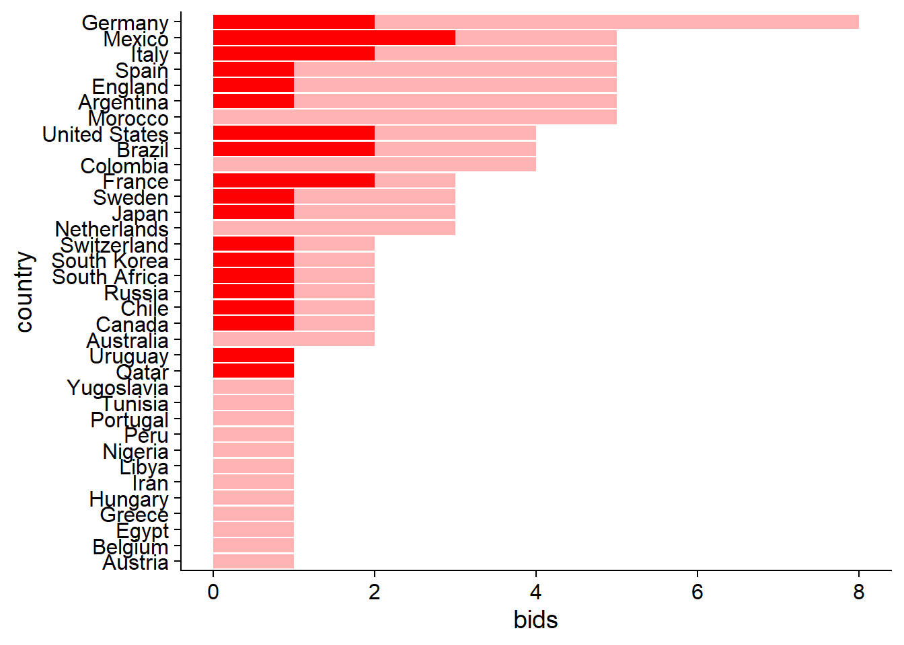
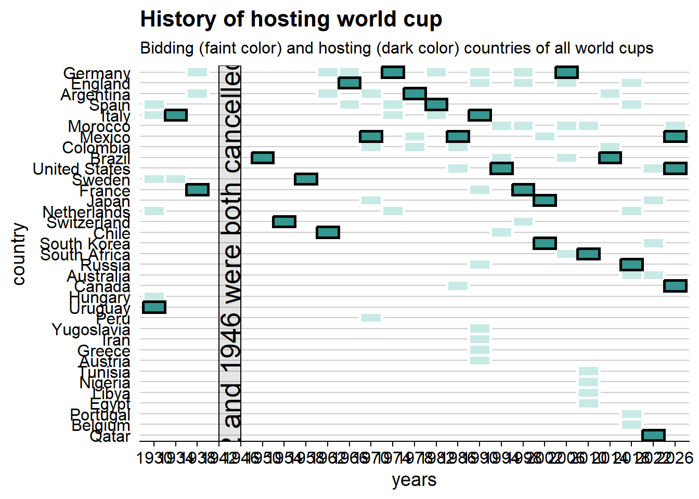
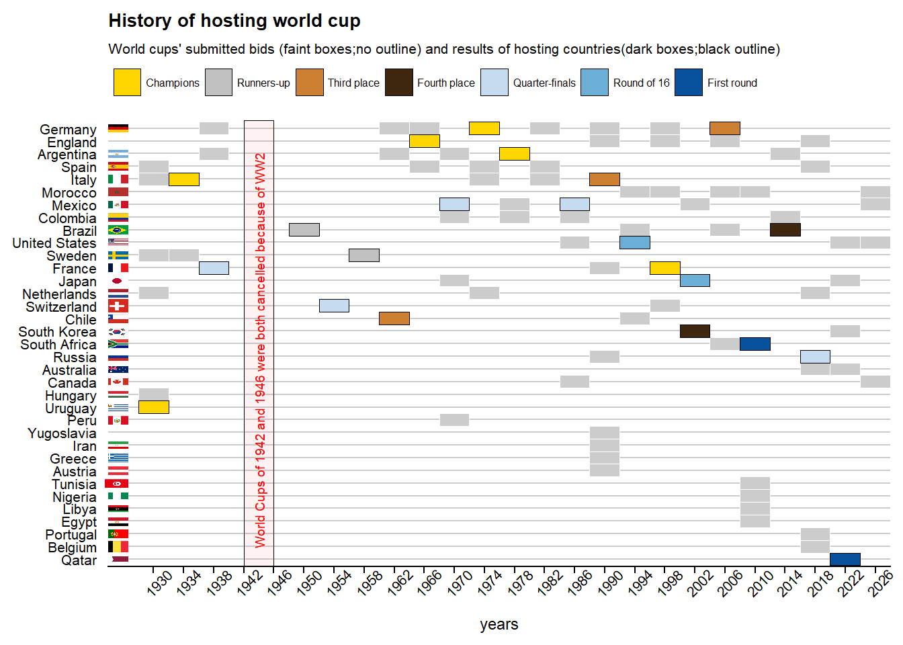

3.4 What is the history of biding and
tbls_lst$total_bids_by_country %>%
arrange(bids,times_hosted) %>%
mutate(country = factor(country, levels = (country))) %>%
ggplot()+
geom_col(aes(country,bids), fill = "red", alpha = 0.3)+
geom_col(aes(country,times_hosted), fill = "red", alpha = 1)+
coord_flip()
df_2 <- tbls_lst$total_bids_by_country %>%
mutate(years = str_extract_all(years, "[0-9]+")) %>%
unnest(years) %>%
mutate(years = as.numeric(years))
df_2b <- tbls_lst$total_bids_by_country %>%
separate_rows(years, sep = "[^[:digit:].]+") %>%
filter(!nchar( years)== 0) %>%
mutate(years = as.numeric(years)) %>%
arrange(bids) %>%
mutate(country = factor(country, levels = unique(country)))
df_3 <- df_host %>%
mutate(host_nation_s = str_replace(host_nation_s, "West Germany", "Germany"),
host_nation_s = str_split(host_nation_s, "\\s{2}")) %>%
unnest(host_nation_s) %>%
dplyr::rename(country="host_nation_s",
host_year = "year") %>%
full_join(df_2, by = "country") %>%
mutate(host_year = ifelse(is.na(continent), years, host_year)) %>%
arrange(bids,desc(host_year )) %>%
mutate(country = factor(country, levels = unique(country)),
bids = factor(bids, levels = sort(unique(bids), decreasing = TRUE)))df_3 %>%
ggplot()+
geom_tile(aes(years, country),
fill = "#c7eae5", color = "white", size = 1) +
geom_tile(data = . %>% filter(times_hosted>0 & host_year == years),
aes(years, country),
fill="#35978f", color = "black", size = 1) +
geom_rect(data = tibble(xmin = 1942, xmax = 1946, ymin = -Inf, ymax = Inf),
mapping = aes(ymin = ymin, ymax = ymax, xmin = xmin, xmax = xmax),
alpha = 0.1,
fill = "black",
color = "black",
inherit.aes = FALSE
)+
geom_vline(xintercept = c(1942, 1946), col = "black", lty = 2, alpha = 0.7)+
scale_x_discrete(limits = seq(min(df_3$years),max(df_3$years),4))+
annotate("text",
angle = 90, x = 1944, y = 17.5,size =7,
label = "World Cups of 1942 and 1946 were both cancelled because of WW2")+
#facet_grid(bids~.,scales = "free_y", space = "free_y")+
labs(title = "History of hosting world cup",
subtitle = "Bidding (faint color) and hosting (dark color) countries of all world cups")+
theme(axis.ticks.y = element_blank(),
axis.line.y = element_blank(),
panel.grid.major = element_line(colour = "grey80"),
panel.grid.major.x = element_blank())## Warning: Continuous limits supplied to discrete scale.
## ℹ Did you mean `limits = factor(...)` or `scale_*_continuous()`?
#
df_3$iso2 <- countrycode(df_3$country, "country.name", "iso2c")## Warning in countrycode_convert(sourcevar = sourcevar, origin = origin, destination = dest, : Some values were not matched unambiguously: Yugoslavia, Englandres_cols <- c("#FFD700",
"#c0c0c0",
"#CD7F32",
"#3e260f",
"#c6dbef",
"#6baed6",
"#2171b5",
"#08519c"
)
names(res_cols) <- results_order[-length(results_order )]
df_3 %>%
ggplot()+
geom_tile(aes(years, country),
fill = "grey80", color = "white", size = 0.1) +
geom_tile(data = tbls_lst$host_country_performances %>% filter(result != "TBD") ,
aes(years, country, fill = result),
color = "black", size = 0.1) +
ggimage::geom_flag(data = df_3 %>% distinct(country,iso2),
aes(y = country, image=iso2),
x = 1925,
size =0.03)+
scale_fill_manual(values = res_cols)+
geom_rect(data = tibble(xmin = 1942, xmax = 1946, ymin = -Inf, ymax = Inf),
mapping = aes(ymin = ymin, ymax = ymax, xmin = xmin, xmax = xmax),
alpha = 0.05,
fill = "red",
color = "black",
size = 0.1,
inherit.aes = FALSE
)+
scale_x_discrete(limits = seq(min(df_3$years),max(df_3$years),4),
expand = expansion(add = c(4,NA)))+
annotate("text",
angle = 90, x = 1944, y = 17.5,size = 2.5,color = "red",
label = "World Cups of 1942 and 1946 were both cancelled because of WW2")+
#facet_grid(bids~.,scales = "free_y", space = "free_y")+
labs(title = "History of hosting world cup",
subtitle = "World cups' submitted bids (faint boxes;no outline) and results of hosting countries(dark boxes;black outline)")+
guides(fill = guide_legend(nrow = 1,override.aes = list(size =0.5)))+
theme(title = element_text(size = 9),
axis.text.x = element_text(size = 8, angle = 45,),
axis.ticks.y = element_blank(),
axis.line.y = element_blank(),
axis.title.y = element_blank(),
axis.text.y = element_text(size = 7.8),
panel.grid.major = element_line(colour = "grey80"),
panel.grid.major.x = element_blank(),
legend.title = element_blank(),
legend.text = element_text(size = 6),
legend.spacing.x = unit(0.1,"cm" ),
legend.position = "top")## Warning: Continuous limits supplied to discrete scale.
## ℹ Did you mean `limits = factor(...)` or `scale_*_continuous()`?## Warning: Removed 2 rows containing missing values (`geom_image()`).